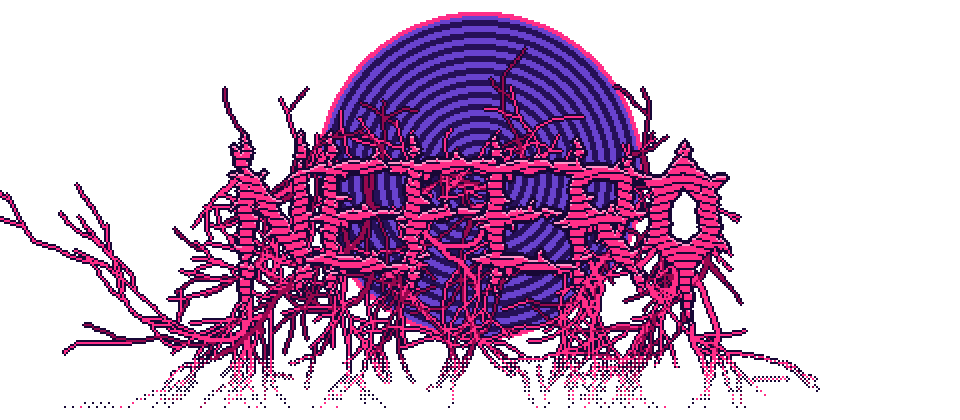
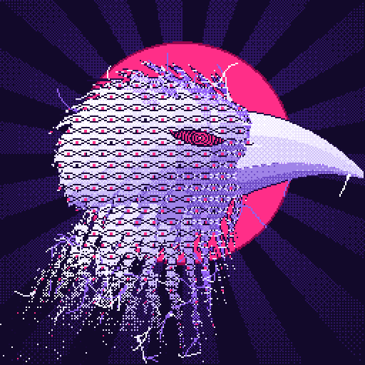
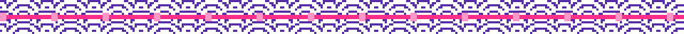

Kauã Neves · game developer · scientific researcherpesquisador científico · director atdiretor da HFTS Productions

Hi, I'm KauãOi, eu sou o Kauã
I make strange games with big atmosphere: card tables at 3 AM, nights that never end, crows that stare back, and a lot of Brazil in everything. Pull up a chair. The coffee is cold, the dice are loaded, and the crow already knows your move.
Faço jogos estranhos, com muito clima: carteado às 3 da manhã, noites que não acabam, corvos que te encaram de volta e muito Brasil em tudo. Puxa a cadeira: o café tá frio, o dado tá viciado e o corvo já sabe a sua jogada.
- Surreal games that keep me entertained first. If I'm not hooked while building it, it doesn't ship.
- Strategy. Plans, bluffs, coalitions, bad decisions with good intentions.
- A pinch of RPG in everything. Stats, choices, consequences. Every game of mine hides a little character sheet.
- Atmosphere over everything. Boteco lights, broken TVs, pixel art that feels like a PS1 fever dream.
- Jogos surrealistas que me divertem primeiro. Se eu não fico viciado fazendo, não sai.
- Estratégia. Planos, blefes, coalizões, decisões ruins com boas intenções.
- Uma pitada de RPG em tudo. Atributos, escolhas, consequências. Todo jogo meu esconde uma fichinha de personagem.
- Clima acima de tudo. Luz de boteco, TV chiando, pixel art com cara de sonho febril de PS1.

HFTS Productions
I'm one of the creators of HFTS Productions, a Brazilian indie studio, and the director of our projects. I wear all the hats: game design, writing and direction, art and programming. Small team, big ideas, questionable sleep schedule.
Jams: GameJamPlus 26/27 (Saideira) · DJUFF GameJam 2026 (Coiote's Dawn) · Game Jam DJUFF 2025 (O Plano)
Sou um dos criadores da HFTS Productions, estúdio indie brasileiro, e o diretor dos nossos projetos. Faço de tudo um pouco: game design, roteiro e direção, arte e programação. Equipe pequena, ideia grande, sono duvidoso.
Jams: GameJamPlus 26/27 (Saideira) · DJUFF GameJam 2026 (Coiote's Dawn) · Game Jam DJUFF 2025 (O Plano)
Outside the gamesFora dos jogos
I study Computer Science at UFF (Universidade Federal Fluminense) in Niterói, Rio de Janeiro. When I'm not making games, I'm a scientific researcher in computer vision and work with data and AI: a traffic digital twin for Niterói, an NBA prediction engine with a published paper, and a new version of the game framework taught at UFF.
Estudo Ciência da Computação na UFF (Universidade Federal Fluminense), em Niterói (RJ). Quando não tô fazendo jogo, sou pesquisador científico em visão computacional e trabalho com dados e IA: um gêmeo digital do trânsito de Niterói, um motor de previsão da NBA com artigo publicado e uma versão nova da framework de jogos ensinada na UFF.
- ArpexAI & Data Engineering InternEstagiário de IA e Engenharia de Dados
- Media Lab UFFComputer Vision Researcher · CNPq research grantPesquisador em Visão Computacional · bolsa CNPq
- DACC-UFFDirector at the Computer Science student unionDiretor do Diretório Acadêmico de Ciência da Computação
Python · SQL · GCP · Machine Learning · LLMs · Computer Vision · Godot · Unity

Cooking right now: QuórumCozinhando agora: Quórum
Quórum is a Brazilian political simulator from 1889 to the future. Start as a city councilor in your neighborhood and climb all the way to the Planalto: run campaigns, negotiate with caucuses, write bills, face the press and govern while the economy answers back. Every law, alliance and election depends on closing the quorum. Made in Godot.
Quórum é um simulador político brasileiro de 1889 ao futuro. Comece como vereador no seu bairro e suba até o Planalto: monte campanhas, negocie com bancadas, escreva projetos de lei, enfrente a imprensa e governe com a economia respondendo. Cada lei, aliança e eleição depende de fechar o quórum. Feito em Godot.
See the gameVer o jogo →